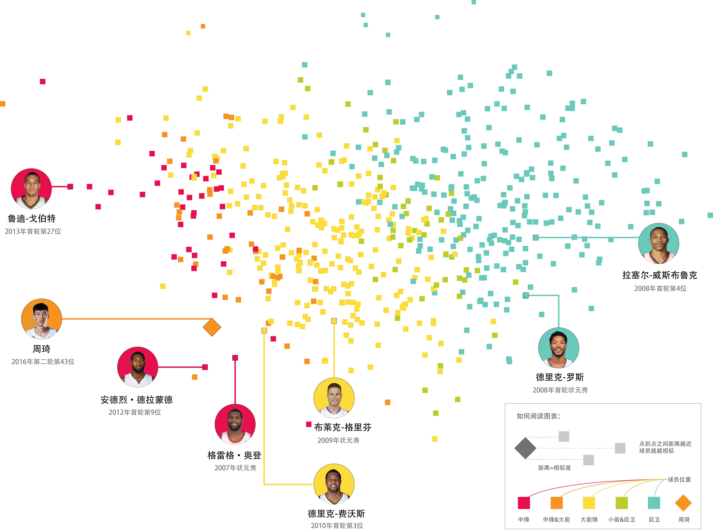
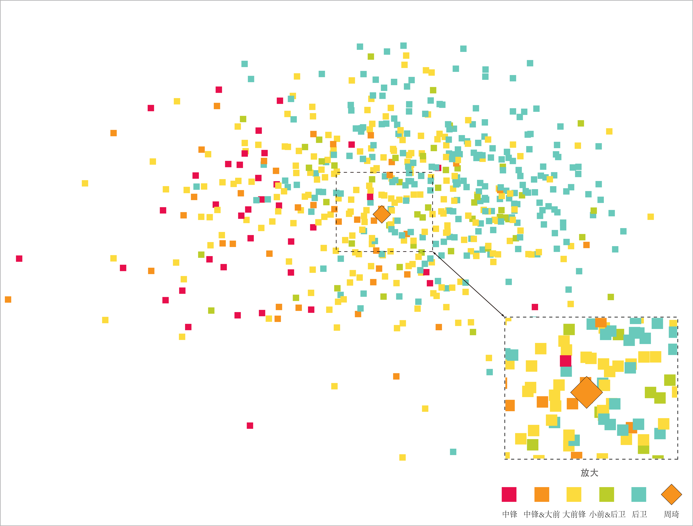
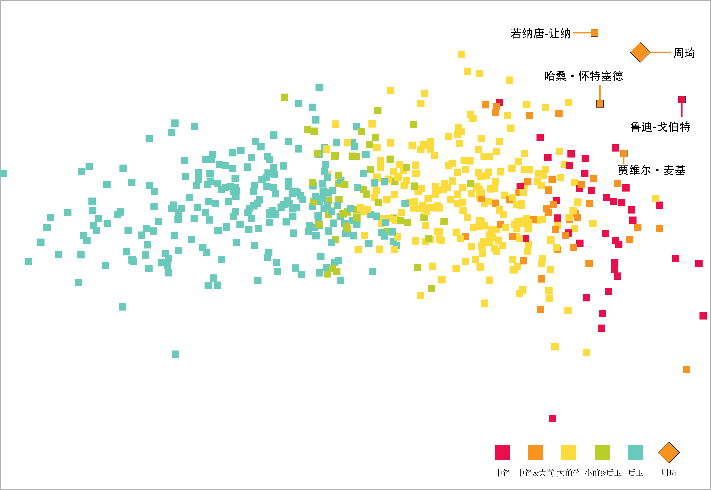

周琦之路
2016年NBA选秀大会，周琦以第二轮43顺位被休斯顿火箭队选中，但周琦并未立即加盟。同年8月的里约奥运会上，几乎所有人都对他报以厚望，但周琦场均只有5.6分1.2篮板进账，结果不尽如人意，引起诸多争议。在CBA 16-17赛季总决赛中，周琦所在的新疆4-0横扫广东夺冠，周琦功不可没，成功地证明了自己的实力。近期又不断传出周琦将在下赛季加盟火箭队的消息。现在的周琦是否有实力进入NBA呢？加盟火箭究竟是火箭队认可了周琦的实力，还是出于其他的动机呢？

CBA冠军之路
周琦，成名于2011年U16土耳其男篮邀请赛。当时年仅15岁的周琦在决赛面对东道主土耳其队时，砍下30分17篮板8盖帽的数据，带领中国队以67-66惊险夺冠。之后，周琦“大魔王”的绰号便开始流传。同年的U16亚青赛，周琦带领中国队40分大胜韩国队。2013年U19世青赛，周琦以场均5.4盖帽荣膺盖帽王。
2014年，周琦正式签约新疆队并开始征战CBA。2016年，在周琦征战CBA的第三个赛季中，新疆队一路过关斩将，高歌猛进拿下16-17赛季总冠军，让我们一起来回顾一下周琦的CBA冠军之路。
16-17赛季常规赛新疆队以一波七连胜开局，位居联盟首位。但却在随后的五场比赛中遭遇了三场败仗，分别负于广东，深圳，上海，排名也因此掉落到了联盟第六的位置。经历了低谷后，新疆队稳扎稳打，排名也逐步上升。最终在常规赛中取得32胜6负的骄人战绩，获得本赛季常规赛冠军。从图中可以看出，周琦在常规赛中得分稳定，也不乏有砍下高分的优秀表现。作为一名中锋，在进攻端的稳定得分也体现出周琦不俗的实力。（注：本赛季周琦常规赛缺席6场，对应上图单色矩形。）
季后赛第一轮中，作为常规赛冠军的新疆队迎战联盟第八的山东队。虽然有着排名上的优势，但新疆队第一场却以17分的差距负于山东队，对于新疆队来说可谓是当头一棒。随后新疆队调整心态，一鼓作气连下三场取得系列赛的胜利。半决赛中新疆队迎来了辽宁队，新疆队保持着很好的竞技状态，前三场就取得了3:0的领先，并且平均分差达到了16.33分。第四场中由于出现了停表事件被辽宁队扳回一城。随后新疆队再也没有给辽宁队机会，最后一场淘汰辽宁队，挺进总决赛。
新疆队第五次进入总决赛中，对手是“八冠王”广东队。面对传统强队，新疆队并没有气馁，打出了自己的水平。反观广东队，从第一场比赛开始就失去了对比赛节奏的把控，表现远不如新疆队。最终新疆队以4:0横扫广东队，夺下新疆队史上第一座总冠军！
CBA冠军之路
北京时间6月24日，2016年选秀大会在纽约布鲁克林进行。赛前周琦被媒体报以很大的期望，DraftExpress预测周琦能在首轮27顺位被选中。最终在次轮第43顺位，火箭队选中周琦。此举使得周琦成为继巴特尔，王治郅，姚明，易建联和孙悦之后第六位正式登陆NBA的球员。让我们通过数据分析来展望一下周琦在NBA的未来。
我们选取了近十年NBA选秀体测数据，包括敏捷度（绕桩变向, 禁区往返跑），爆发力（垂直纵跳测试/助跑跳测试），速度（3/4球场冲刺跑）（敏捷度，爆发力，速度在图表里标注吧）和选秀球员的各项身体数据（穿鞋身高，体重，臂展，站立摸高，体脂率）。通过统计和分析我们可以看出，周琦的体测数据基本达到了NBA中锋的正常水准。在绕桩变向和禁区折返跑这两项敏捷度测试中，周琦表现不俗，有着超越常规NBA中锋的水准。中锋最重要的垂直纵跳一项，周琦也超出了联盟中锋的正常范围。身体素质上，周琦的身高臂展以及体脂水平都可以算得上顶尖。事实上，周琦的臂展还比1992年的“大鲨鱼”奥尼尔(Shaquille O'Neal)长了3/4英寸。
最后，周琦最大的问题在于他的体重。他必须尽快增重，增强自己的身体对抗能力以适应NBA的对抗强度。综合以上数据分析，我们可以认为，以他的先天身体条件，已经具备了在NBA制霸篮下的先决条件。
从他的过往数据不难看出，周琦已经展示出他过人的封盖能力，再加上他超出自己巨型身材的跑动速度和反映力，使他能够快速回防，以他惊人的臂展有效的遏制对手的进攻，掌控篮板。从上面种种数据可以看出，周琦有其不足，同时也有着巨大的发展潜力，那么未来的周琦可以在NBA扮演一个什么角色呢？他的NBA的定位应该是什么？他又能否在NBA立足？
为了分析上面的问题，我们用多维尺度分析(MDS)把上一部分收集到的多维度的选秀数据做了降维投影的处理，通过这样的处理，我们可以得到每个球员的相似度。点的距离越近代表球员之间的相似度越高。

这张图我们选取了选秀的体测数据以及球员的身体数据。我们可以看到综合周琦的各项数据，他的位置靠近中锋，中锋&大前锋，大前锋，但却有一定的偏离，这说明他和这些位置的常规球员有所不同。为了理解周琦离群的原因，我们单独把他们的体测数据（敏捷，爆发力，速度）做了投影，却发现了更有意思的东西。

为了分析上面的问题，我们用多维尺度分析(MDS)把上一部分收集到的多维度的选秀数据做了降维投影的处理，通过这样的处理，我们可以得到每个球员的相似度。点的距离越近代表球员之间的相似度越高。
这张图我们选取了选秀的体测数据以及球员的身体数据。我们可以看到综合周琦的各项数据，他的位置靠近中锋，中锋&大前锋，大前锋，但却有一定的偏离，这说明他和这些位置的常规球员有所不同。为了理解周琦离群的原因，我们单独把他们的体测数据（敏捷，爆发力，速度）做了投影，却发现了更有意思的东西。
这张图我们可以看出，周琦距离常规中锋的距离更远了，他的敏捷度，速度，以及爆发力更接近大前锋甚至是后卫。结合上面单项数据的对比图我们可以发现，周琦的变向，折返跑，垂直纵跳能力都超过一般的中锋，这就解释了他离群的原因。单从这些数据上看或许周琦未来更适合打大前锋的位置，考虑到他灵活的脚步，篮下得分能力以及达到三分线得射程，周琦或许能够成为像卡尔-安东尼·唐斯(Karl-Anthony Towns)那样的新型中锋。

造成周琦离群的原因不止一个，他与其他中锋最大差别在于他顶尖的身高和臂展，以及他过轻的体重，这个两个极端同时出现在一个人身上，那他必然会显得与众不同。周琦的瘦已经成为了他职业发展的障碍。不过周琦似乎也认识到了自己的不足，最近关于周琦的报道也都是正面为主，他也在网上晒出了自己苦练力量的视频。如果周琦通过刻苦的训练克服了自己的短板，相信他一定位成为一名出色的NBA球员。
目前周琦已经前往休斯顿训练，网上也不断传出火箭队与周琦签约的传言，通过本文的分析，周琦的确是一名很有潜力的球员，火箭队应该正式看中了这一点，才会有了这笔稳赚不亏的交易。因为火箭队，所以经常有人拿周琦和姚明对比，其实除了文化影响以外，两人几乎完全不同，相信周琦也能走出属于自己的道路。但是换个角度考虑，姚明对于火箭队，对于NBA的重要意义不言而喻，姚明的加盟拓宽了NBA在中国的市场，也提高了火箭队的市值，那么火箭对于周琦的选择是否也抱有同样的期待呢？答案应该肯定的。